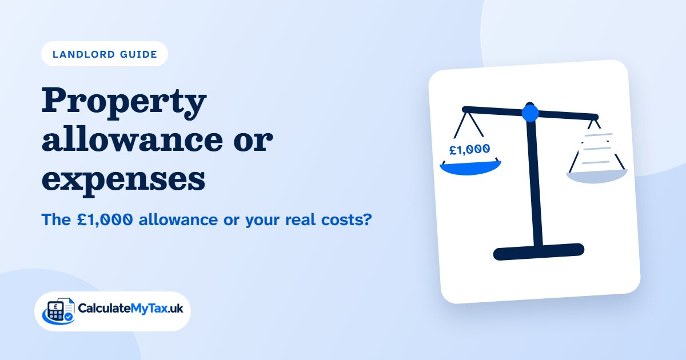
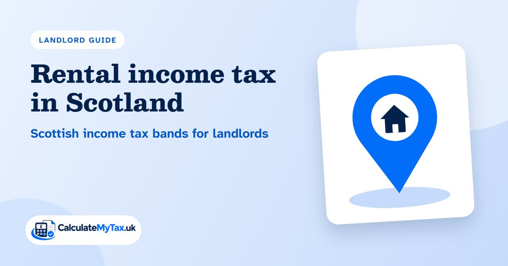
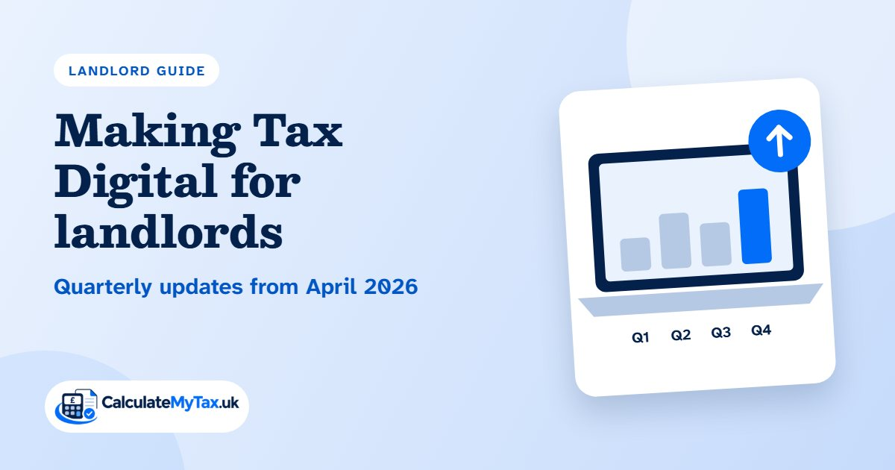

UK landlord tax, worked out in minutes
Enter your rent, running costs and mortgage interest to see the income tax on your rental profit. The estimate uses current HMRC rates and applies Section 24 properly, and the full calculator shows every step.
- 2026/27 HMRC rates, checked 13 September 2026
- Section 24 applied properly
- No sign-up, figures stay in your browser
Choose the calculator or guide you need
Free, accurate and private UK tax help for landlords. No sign-up needed, and your figures never leave your browser.
Rental income tax calculator
Work out the tax on your rental profit, with Section 24 mortgage interest relief, Scotland and joint owners.
MortgagesSection 24 mortgage interest relief
See how the 20% tax credit on mortgage interest works, and why higher rate landlords pay more.
ExpensesAllowable expenses for landlords
Letting agent fees, repairs, insurance and the other running costs you can take off your rent.
AllowanceProperty allowance or expenses
Find out when the £1,000 tax-free allowance beats claiming your actual costs.
ScotlandRental income tax in Scotland
How the Scottish income tax bands, from 19% to 48%, apply to your rental profit.
New for 2027Property income tax rates from April 2027
Rental profit gets its own tax rates from 6 April 2027. See what they could add to your bill.
- Tested against HMRC examples2026/27 rates, last checked 13 September 2026
- Private by designYour figures never leave your browser
- Instant resultsNo sign-up or email address needed
A rental income tax calculator that shows its working
Most landlord calculators stop at one number. Ours shows how your rent is split across the tax bands, what Section 24 costs you compared with the old rules, and whether the property allowance would beat claiming expenses.
There is no sign-up and no email address to give. Your figures stay in your browser.
Open the calculator- Estimates UK income tax on rental profit for every tax year in the rates file
- Covers England, Wales and Northern Ireland, and Scotland
- Applies the Section 24 mortgage interest credit with all three limits and carry-forward
- Compares allowable expenses, the property allowance and Rent a Room relief, and recommends the cheapest
- Handles joint ownership at any split, using each owner's other income
- Pools several properties into one property business
- Uses brought-forward property losses and unrelieved finance costs
- Flags Making Tax Digital thresholds and the April 2027 property income rates
- Runs in the browser with no sign-up; results can be shared as a link or printed
Landlord tax guides
Each guide answers its question in the first few lines, then shows the detail and the figures behind it.
Tax on rental income
How much tax you pay on rental income, the five steps HMRC uses, and worked examples at every tax rate.
Read the guideAllowable expenses for landlords
The running costs you can take off your rent, what counts as a repair, and the costs you cannot claim.
Read the guideSection 24 mortgage interest relief
How the mortgage interest tax credit works, the three limits on it, and what happens to interest you cannot use.
Read the guide
Property allowance or expenses
When the tax-free property allowance beats claiming your actual costs, and when it leaves you paying more.
Read the guideThe Rent a Room Scheme
How letting a furnished room in your own home can be tax-free, and the two ways to work out the tax.
Read the guide
Rental income tax in Scotland
How the Scottish income tax bands apply to rental profit, and how the mortgage interest credit works for Scottish taxpayers.
Read the guide
Property income tax rates from April 2027
The separate income tax rates for property income from 6 April 2027, and what they could add to your bill.
Read the guide
Making Tax Digital for landlords
Who must keep digital records and send quarterly updates, the income thresholds and the start dates.
Read the guideWho we can help
Anyone earning rent in the UK, from a single flat let through an agent to a room in your own home. If this is the first year you need to declare rental income, start with the guide for first-time filers.
Help for first-time filersOur services
If you would rather hand over the paperwork, we can prepare and file your Self Assessment tax return, including the property pages.
Self Assessment tax returnsThe allowances behind every figure
These come from the same rates file the calculator reads, so the numbers here always match your result.
| Allowance | 2025/26 | 2026/27 | 2027/28 |
|---|---|---|---|
| Personal allowance | £12,570 | £12,570 | £12,570 |
| Allowance starts to fall above | £100,000 | £100,000 | £100,000 |
| Property allowance | £1,000 | £1,000 | £1,000 |
| Rent a Room limit | £7,500 | £7,500 | £7,500 |
| Rent a Room limit, shared | £3,750 | £3,750 | £3,750 |
| Mortgage interest credit | 20% | 20% | 22% |
Last verified 13 September 2026 against GOV.UK and HMRC.
Questions landlords ask about rental income tax
How much tax will I pay on rental income in the UK?
It depends on your rental profit and your other income, because your profit is added on top of your salary or pension and taxed at the rates that income has already reached. For example, in 2026/27 a landlord in England with a £45,000 salary, £18,000 of rent, £3,200 of running costs and £6,400 of mortgage interest pays £3,586 of tax on the rent, about £298.83 a month. Put your own figures into the rental income tax calculator to see yours.
How is landlord tax calculated?
Start with the rent you received in the tax year, from 6 April to 5 April. Take off your allowable expenses, or claim the £1,000 property allowance instead, to find your profit. Add the profit to your other income and work out income tax at your usual rates. Finally, take off a tax credit of 20% of your mortgage interest, which is limited by your profit and your income. The guide to tax on rental income shows each step.
Do I pay tax if I rent out my house?
Yes, if the rent leaves you with a profit. Letting out your home while you live somewhere else makes you a landlord for tax: the rent, less your running costs, is added to your other income and taxed at your usual rates, with a 20% credit for mortgage interest. If your gross rent for the year is £1,000 or less, the property allowance usually covers it. If you let a furnished room in a home you still live in, the Rent a Room Scheme lets you receive up to £7,500 a year tax-free.
How can landlords pay less tax on rental income?
Legally, by claiming everything you are entitled to. Deduct every allowable running cost, or claim the £1,000 property allowance instead if your costs are lower and you have no mortgage interest to claim. Use Rent a Room relief if you let a furnished room in your own home, and carry forward losses and mortgage interest you could not use. Paying into a personal pension or giving to charity with Gift Aid extends your basic rate band, so less of your profit is taxed at higher rates. Married couples and civil partners who own a property in unequal shares can be taxed on their real shares by sending HMRC Form 17. The calculator compares expenses, the property allowance and Rent a Room relief for you.
Do I pay UK tax on rental income if I live abroad?
Yes. Rent from property in the UK is taxed in the UK wherever you live. If your usual home is outside the UK, HMRC treats you as a non-resident landlord. Your letting agent, or your tenant if you have no agent and the rent is more than £100 a week, must take basic rate tax off the rent and pay it to HMRC, unless HMRC has approved you to receive the rent in full. You still report the income on a Self Assessment tax return. GOV.UK explains the Non-Resident Landlord Scheme. The calculator on this site assumes you live in the UK.
Do I pay tax on rental income in Scotland?
Yes. If you are a Scottish taxpayer, your rental profit is taxed at Scottish income tax rates, from 19% to 48%. Where you live decides the rates, not where the property is. You report the rent on the same UK Self Assessment return. Choose Scotland in the calculator to use these bands, or read the guide to rental income tax in Scotland.